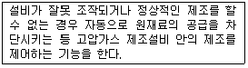
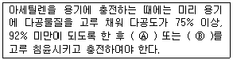
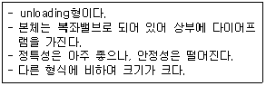

가스기능사 (2014-07-20 기출문제)
1과목: 가스안전관리
1. 건축물 내 도시가스 매설배관으로 부적합한 것은?
- 동관
- 강관
- 스테인리스강
- 가스용 금속플렉시블호스
(정답률: 66%)

2. 시안화수소를 충전한 용기는 충전 후 몇 시간 정치한 뒤 가스의 누출검사를 해야 하는가?
- 6
- 12
- 18
- 24
(정답률: 92%)
3. 도시가스공급시설의 공사계획 승인 및 신고대상에 대한 설명으로 틀린 것은?
- 제조소 안에서 액화가스용저장탱크의 위치변경 공사는 공사계획 신고대상이다.
- 밸브기지의 위치변경 공사는 공사계획 신고대상이다.
- 호칭지름이 50㎜ 이하인 저압의 공급관을 설치하는 공사는 공사계획 신고대상에서 제외한다.
- 저압인 사용자공급관 50m를 변경하는 공사는 공사계획 신고대상이다.
(정답률: 56%)
4. 고압가스용 냉동기에 설치하는 안전장치의 구조에 대한 설명으로 틀린 것은?
- 고압차단장치는 그 설정압력이 눈으로 판별할 수 있는 것으로 한다.
- 고압차단장치는 원칙적으로 자동복귀방식으로 한다.
- 안전밸브는 작동압력을 설정한 후 봉인될 수 있는 구조로 한다.
- 안전밸브 각부의 가스통과 면적은 안전밸브의 구경면적 이상으로 한다.
(정답률: 77%)
5. 염소(Cl2)의 재해 방지용으로서 흡수제 및 재해제가 아닌 것은?
- 가성소다 수용액
- 소석회
- 탄산소다 수용액
- 물
(정답률: 71%)
6. 일반도시가스사업 가스공급시설의 입상관 밸브는 분리가 가능한 것으로서 바닥으로부터 몇 m 범위에 설치하여야 하는가?
- 0.5 ~ 1.0m
- 1.2 ~ 1.5m
- 1.6 ~ 2.0m
- 2.5 ~ 3.0m
(정답률: 71%)
7. 연소에 대한 일반적인 설명 중 옳지 않은 것은?
- 인화점이 낮을수록 위험성이 크다.
- 인화점보다 착화점의 온도가 낮다.
- 발열량이 높을수록 착화온도는 낮아진다.
- 가스의 온도가 높아지면 연소범위는 넓어진다.
(정답률: 70%)
8. 독성가스 저장시설의 제독 조치로써 옳지 않은 것은?
- 흡수, 중화조치
- 흡착 제거조치
- 이송설비로 대기 중에 배출
- 연소조치
(정답률: 82%)
9. 다음 굴착공사 중 굴착공사를 하기 전에 도시가스사업자와 협의를 하여야 하는 것은?
- 굴착공사 예정지역 범위에 묻혀 있는 도시가스배관의 길이가 110m인 굴착공사
- 굴착공사 예정지역 범위에 묻혀 있는 송유관의 길이가 200m인 굴착공사
- 해당 굴착공사로 인하여 압력이 3.2kPa인 도시가스배관의 길이가 30m 노출될 것으로 예상되는 굴착공사
- 해당 굴착공사로 인하여 압력이 0.8MPa인 도시가스배관의 길이가 8m 노출될 것으로 예상되는 굴착공사
(정답률: 62%)
10. 고압가스 제조설비에 설치하는 가스누출경보 및 자동차단장치에 대한 설명으로 틀린 것은?
- 계기실 내부에도 1개 이상 설치한다.
- 잡가스에는 경보하지 아니하는 것으로 한다.
- 누출을 검지하여 그 농도를 지시함과 동시에 경보를 울리는 방식으로 한다.
- 가연성 가스의 제조설비에 격막 갈바니 전지방식의 것을 설치한다.
(정답률: 62%)
11. 다음은 어떤 안전에 대한 설명인가?

- 긴급이송설비
- 인터록기구
- 안전밸브
- 벤트스택
(정답률: 88%)
12. 일반도시가스사업자의 가스공급시설 중 정압기의 분해 점검 주기의 기준은?
- 1년에 1회 이상
- 2년에 1회 이상
- 3년에 1회 이상
- 5년에 1회 이상
(정답률: 78%)
13. 공기 중 폭발범위에 따른 위험도가 가장 큰 가스는?
- 암모니아
- 황화수소
- 석탄가스
- 이황화탄소
(정답률: 54%)
14. 공기 중에서 폭발하한치가 가장 낮은 것은?
- 시안화수소
- 암모니아
- 에틸렌
- 부탄
(정답률: 67%)
15. 폭발등급은 안전간격에 따라 구분한다. 폭발 등급 Ⅰ급이 아닌 것은?
- 일산화탄소
- 메탄
- 암모니아
- 수소
(정답률: 53%)
16. 아세틸렌은 폭발 형태에 따라 크게 3가지로 분류된다. 이에 해당되지 않는 폭발은?
- 화합폭발
- 중합폭발
- 산화폭발
- 분해폭발
(정답률: 77%)
17. 고압가스안전관리법의 적용을 받는 가스는?
- 철도차량의 에어콘디셔너 안의 고압가스
- 냉동능력 3톤 미만인 냉동설비 안의 고압가스
- 용접용 아세틸렌가스
- 액화브롬화메탄 제조설비 외에 있는 액화브롬화메탄
(정답률: 76%)
18. 액화석유가스 사용시설을 변경하여 도시가스를 사용하기 위해서 실시하여야 하는 안전조치 중 잘못 설명한 것은?
- 일반도시가스사업자는 도시가스를 공급한 이후에 연소기 변경 사실을 확인하여야 한다.
- 액화석유가스의 배관 양단에 막음조치를 하고 호스는 철거하여 설치하려는 도시가스 배관과 구분되도록 한다.
- 용기 및 부대설비가 액화석유가스 공급자의 소유인 경우에는 도시가스공급 예정일까지 용기 등을 철거해 줄 것을 공급자에게 요청해야 한다.
- 도시가스로 연료를 전환하기 전에 액화석유가스 안전공급계약을 해지하고 용기 등의 철거와 안전조치를 확인 하여야 한다.
(정답률: 65%)
19. 고압가스설비에 장치하는 압력계의 눈금은?
- 상용압력의 2.5배 이상, 3배 이하
- 상용압력의 2배 이상, 2.5배 이하
- 상용압력의 1.5배 이상, 2배 이하
- 상용압력의 1배 이상, 1.5배 이하
(정답률: 90%)
20. LP가스 충전설비의 작동 상황 점검주기로 옳은 것은?
- 1일 1회 이상
- 1주일 1회 이상
- 1월 1회 이상
- 1년 1회 이상
(정답률: 84%)
21. 다음 중 가연성이면서 유독한 가스는?
- NH3
- H2
- CH4
- N2
(정답률: 85%)
22. 시안화수소(HCN)의 위험성에 대한 설명으로 틀린 것은?
- 인화온도가 아주 낮다.
- 오래된 시안화수소는 자체 폭발할 수 있다.
- 용기에 충전한 후 60일을 초과하지 않아야 한다.
- 호흡 시 흡입하면 위험하나 피부에 묻으면 아무 이상이 없다.
(정답률: 89%)
23. 도시가스 배관의 지하매설 시 사용하는 침상재료(Bedding)는 배관 하단에서 배관 상단 몇 ㎝까지 포설하는가?
- 10
- 20
- 30
- 40
(정답률: 79%)
24. 다음은 이동식 압축도시가스 자동차충전시설을 점검한 내용이다. 이 중 기준에 부적합한 경우는?
- 이동충전차량과 가스배관구를 연결하는 호스의 길이가 6m이었다.
- 가스배관구 주위에는 가스배관구를 보호하기 위하여 높이 40㎝, 두께 13㎝인 철근콘크리트 구조물이 설치되어 있었다.
- 이동충전차량과 충전설비 사이 거리는 8m이었고, 이동충전차량과 충전설비 사이에 강판제 방호벽이 설치되어 있었다.
- 충전설비 근처 및 충전설비에서 6m 이상 떨어진 장소에 수동 긴급차단장치가 각각 설치되어 있었으며 눈에 잘 띄었다.
(정답률: 58%)
25. 고정식 압축도시가스자동차 충전의 저장설비, 처리설비, 압축가스설비, 외부에 설치하는 경계책의 설치기준으로 틀린 것은?
- 긴급차단장치를 설치할 경우는 설치하지 아니할 수 있다.
- 방호벽(철근콘크리트로 만든 것)을 설치할 경우는 설치하지 아니할 수 있다.
- 처리설비 및 압축가스설비가 밀폐형 구조물 안에 설치된 경우는 설치하지 아니할 수 있다.
- 저장설비 및 처리설비가 액확산방지시설 내에 설치된 경우는 설치하지 아니할 수 있다.
(정답률: 55%)
26. 다음 ( )안의 Ⓐ와 Ⓑ에 들어갈 명칭은?

- Ⓐ 아세톤 Ⓑ 알코올
- Ⓐ 아세톤 Ⓑ 물(H2O)
- Ⓐ 아세톤 Ⓑ 디메틸포름아미드
- Ⓐ 알코올 Ⓑ 물(H2O)
(정답률: 78%)
27. 고압가스 용기의 파열사고 원인으로서 가장 거리가 먼 것은?
- 압축산소를 충전한 용기를 차량에 눕혀서 운반하였을 때
- 용기의 내압이 이상 상승하였을 때
- 용기 재질의 불량으로 인하여 인장강도가 떨어질 때
- 균열 되었을 때
(정답률: 78%)
28. 도시가스사용시설 중 자연배기식 반밀폐식 보일러에서 배기톱의 옥상돌출부는 지붕면으로부터 수직거리로 몇 ㎝ 이상으로 하여야 하는가?(오류 신고가 접수된 문제입니다. 반드시 정답과 해설을 확인하시기 바랍니다.)
- 30
- 50
- 90
- 100
(정답률: 44%)
29. 자동차용 압축천연가스 완속충전설비에서 실린더 내경이 100㎜, 실린더의 행정이 200㎜, 회전수가 100rpm일 때 처리능력(m3/h)은 얼마인가?
- 9.42
- 8.21
- 7.⑤
- 6.15
(정답률: 41%)
30. 공정과 설비의 고장형태 및 영향, 고장형태별 위험도 순위 등을 결정하는 안전성평가기법은?
- 예비위험분석(PHA)
- 위험과 운전분석(HAZOP)
- 결함수분석(FTA)
- 이상 위험도 분석(FMECA)
(정답률: 57%)
2과목: 가스장치 및 기기
31. 다음 중 왕복식 펌프에 해당하는 것은?
- 기어펌프
- 베인펌프
- 터빈펌프
- 플런저펌프
(정답률: 68%)
32. LP가스 공급방식 중 자연기화 방식의 특징에 대한 설명으로 틀린 것은?
- 기화능력이 좋아 대량 소비 시에 적당하다.
- 가스 조성의 변화량이 크다.
- 설비장소가 크게 된다.
- 발열량의 변화량이 크다.
(정답률: 58%)
33. LPG를 탱크로리에서 저장탱크로 이송 시 작업을 중단해야 되는 경우가 아닌 것은?
- 과충전이 된 경우
- 충전기에서 자동차에 충전하고 있을 때
- 작업 중 주위에 화재 발생 시
- 누출이 생길 경우
(정답률: 86%)
34. 저온액화가스 탱크에서 발생할 수 있는 열의 침입현상으로 가장 거리가 먼 것은?
- 연결된 배관을 통한 열전도
- 단열재를 충전한 공간에 남은 가스분자의 열전도
- 내면으로 부터의 열전도
- 외면의 열복사
(정답률: 67%)
35. 내압이 0.4~0.5MPa 이상이고, LPG나 액화가스와 같이 낮은 비점의 액체일 때 사용되는 터보식 펌프의 메카니컬 시일 형식은?
- 더블 시일
- 아웃사이드 시일
- 밸런스 시일
- 언밸런스 시일
(정답률: 73%)
36. 3단 토출압력이 2MPa·g이고, 압축비가 2인 4단공기압축기에서 1단 흡입 압력은 약 몇 MPa·g인가?
- 0.16MPa·g
- 0.26MPa·g
- 0.36MPa·g
- 0.46MPa·g
(정답률: 39%)
37. 다음 [보기]에서 설명하는 정압기의 종류는?

- 레이놀드 정압기
- 엠코 정압기
- 피셔식 정압기
- 엑셀 플로우식 정압기
(정답률: 73%)
38. 대형 저장탱크 내를 가는 스테인리스관으로 상하로 움직여 관내에서 분출하는 가스상태와 액체상태의 경계면을 찾아 액면을 측정하는 액면계로 옳은 것은?
- 슬립튜브식 액면계
- 유리관식 액면계
- 클링커식 액면계
- 플로트식 액면계
(정답률: 60%)
39. 다음 배관재료 중 사용온도 350℃ 이하, 압력이 10MPa 이상의 고압관에 사용되는 것은?
- SPP
- SPPH
- SPPW
- SPPG
(정답률: 89%)
40. 반복하중에 의해 재료의 저항력이 저하하는 현상을 무엇이라고 하는가?
- 교축
- 크리프
- 피로
- 응력
(정답률: 77%)
41. 펌프의 실제 송출유량을 Q, 펌프 내부에서의 누설유량을 0.6Q, 임펠러 속을 지나는 유량을 1.6Q라 할 때 펌프의 체적효율(ηV)은?
- 3.75%
- 40%
- 60%
- 62.5%
(정답률: 51%)
42. 도시가스의 측정 사항에 있어서 반드시 측정하지 않아도 되는 것은?
- 농도 측정
- 연소성 측정
- 압력 측정
- 열량 측정
(정답률: 61%)
43. 가연성가스를 냉매로 사용하는 냉동제조시설의 수액기에는 액면계를 설치한다. 다음 중 수액기의 액면계로 사용할 수 없는 것은?
- 환형유리관 액면계
- 차압식 액면계
- 초음파식 액면계
- 방사선식 액면계
(정답률: 70%)
44. 가연성가스 검출기 중 탄광에서 발생하는 CH4의 농도를 측정하는데 주로 사용되는 것은?
- 간섭계형
- 안전등형
- 열선형
- 반도체형
(정답률: 80%)
45. LP가스 자동차충전소에서 사용하는 디스펜서(Dispenser)에 대하여 옳게 설명한 것은?
- LP가스 충전소에서 용기에 일정량의 LP가스를 충전하는 충전기기이다.
- LP가스 충전소에서 용기에 충전하는 가스용적을 계량하는 기기이다.
- 압축기를 이용하여 탱크로리에서 저장탱크로 LP가스를 이송하는 장치이다.
- 펌프를 이용하여 LP가스를 저장탱크로 이송할 때 사용하는 안전장치이다.
(정답률: 62%)
3과목: 가스일반
46. 일산화탄소의 성질에 대한 설명 중 틀린 것은?
- 산화성이 강한 가스이다.
- 공기보다 약간 가벼우므로 수상치환으로 포집한다.
- 개미산에 진한 황산을 작용시켜 만든다.
- 혈액 속의 헤모글로빈과 반응하여 산소의 운반력을 저하시킨다.
(정답률: 56%)
47. 수은주 760㎜Hg 압력은 수주로 얼마가 되는가?
- 9.33 mH2O
- 10.33 mH2O
- 11.33 mH2O
- 12.33 mH2O
(정답률: 81%)
48. 고압가스 종류별 발생 현상 또는 작용으로 틀린 것은?
- 수소 – 탈탄작용
- 아세틸렌 – 아세틸라이드 생성
- 염소 – 부식
- 암모니아 – 카르보닐 생성
(정답률: 68%)
49. 100J 일의 양을 cal 단위로 나타내면 약 얼마인가?
- 24
- 40
- 240
- 400
(정답률: 58%)
50. 정압비열(Cp)와 정적비열(Cv)의 관계를 나타내는 비열비(k)를 옳게 나타낸 것은?
- k = Cp/Cv
- k = Cv/Cp
- k < 1
- k = Cv-Cp
(정답률: 67%)
51. 고압가스의 성질에 따른 분류가 아닌 것은?
- 가연성 가스
- 액화 가스
- 조연성 가스
- 불연성 가스
(정답률: 85%)
52. 다음 중 확산 속도가 가장 빠른 것은?
- O2
- N2
- CH4
- CO2
(정답률: 63%)
53. 다음 각 온도의 단위환산 관계로서 틀린 것은?
- 0℃ = 273K
- 32℉ = 492°R
- 0K = -273℃
- 0K = 460°R
(정답률: 64%)
54. 수소의 공업적 용도가 아닌 것은?
- 수증기의 합성
- 경화유의 제조
- 메탄올의 합성
- 암모니아 합성
(정답률: 58%)
55. 압력이 일정할 때 기체의 절대온도와 체적은 어떤 관계가 있는가?
- 절대온도와 체적은 비례한다.
- 절대온도와 체적은 반비례한다.
- 절대온도는 체적의 제곱에 비례한다.
- 절대온도는 체적의 제곱에 반비례한다.
(정답률: 58%)
56. 다음 중 수소(H2)의 제조법이 아닌 것은?
- 공기액화 분리법
- 석유 분해법
- 천연가스 분해법
- 일산화탄소 전화법
(정답률: 46%)
57. 프로판의 완전연소 반응식으로 옳은 것은?
- C3H8＋4O2 → 3CO2＋2H2O
- C3H8＋5O2 → 3CO2＋4H2O
- C3H8＋2O2 → 3CO＋H2O
- C3H8＋O2 → CO2＋H2O
(정답률: 78%)
58. 도시가스 제조방식 중 촉매를 사용하여 사용온도 400~800℃에서 탄화수소와 수증기를 반응시켜 수소, 메탄, 일산화탄소, 탄산가스 등의 저급 탄화수소로 변환시키는 프로세스는?
- 열분해 프로세스
- 접촉분해 프로세스
- 부분연소 프로세스
- 수소화분해 프로세스
(정답률: 62%)
59. 표준상태에서 분자량이 44인 기체의 밀도는?
- 1.96g/L
- 1.96kg/L
- 1.55g/L
- 1.55kg/L
(정답률: 55%)
60. 다음 중 저장소의 바닥부 환기에 가장 중점을 두어야 하는 가스는?
- 메탄
- 에틴엘
- 아세틸렌
- 부탄
(정답률: 74%)